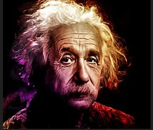

About Me
Albert Einstein, (born March 14, 1879, Ulm, Württemberg, Germany—died April 18, 1955, Princeton, New Jersey, U.S.), German-born physicist who developed the special and general theories of relativity and won the Nobel Prize for Physics in 1921 for his explanation of the photoelectric effect. Einstein is generally considered the most influential physicist of the 20th century. Einstein became deeply religious at age 12, even composing several songs in praise of God and chanting religious songs on the way to school. This began to change, however, after he read science books that contradicted his religious beliefs. This challenge to established authority left a deep and lasting impression.


Experience
- Patent Office Employment: Einstein worked as a patent examiner at the Swiss Patent Office in Bern, where he gained insights into technological innovations.
- Annus Mirabilis Papers: In 1905, he published four groundbreaking papers that revolutionized physics, including special relativity and the photoelectric effect.
- Academic Career: Einstein held teaching positions at various universities, focusing on theoretical physics and the development of the theory of general relativity.
- Advocacy: Beyond science, he was an advocate for civil rights, disarmament, and pacifism, while later becoming a professor at Princeton University.
- Theory of General Relativity: His 1915 theory described gravity as spacetime curvature, predicting phenomena like light bending.
- Nobel Prize: He received the Nobel Prize in Physics in 1921 for explaining the photoelectric effect's particle-like nature.
Hobbies
Einstein was an accomplished violinist. He enjoyed playing the violin and often used it as a way to
relax and unwind. He once said, "I often think in music. I live my daydreams in music". Einstein was passionate
about sailing. He learned to sail as a young boy and continued to enjoy the sport throughout his life. He often went
sailing on his boat, the Tümmler. Einstein loved to travel and explore new places. He visited many countries during his
lifetime and was known for his curiosity about different cultures and people.Einstein was an avid reader. He had a vast
collection of books and enjoyed reading works of literature, philosophy, and science outside of his own field.
Images
Blogs
His theory of relativity, which he first presented in a series of papers published in 1905, and his equation E=mc2, which he introduced in 1905 as part of his special theory of relativity, are two of Einstein's most famous works. Einstein also wrote about philosophy, politics, and religion, among other things. "Why Socialism?" is one of his most well-known works (1949), "The World as I See It" (1934), and "Religion and Science" (1934). While Einstein never had a blog, many of his writings and speeches have been collected into books and are widely available for reading and study.